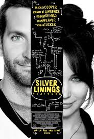

My favorite movie is "Silver Linings Playbook." It's a romantic dramedy about a man with bipolar disorder who, after being released from a psychiatric hospital, tries to rebuild his life and win back his ex-wife but unexpectedly forms a deep connection with a troubled young widow..
